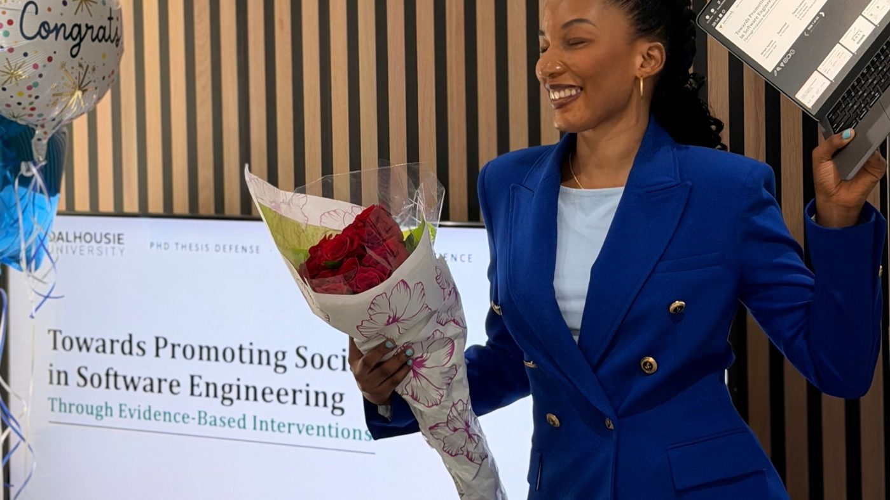
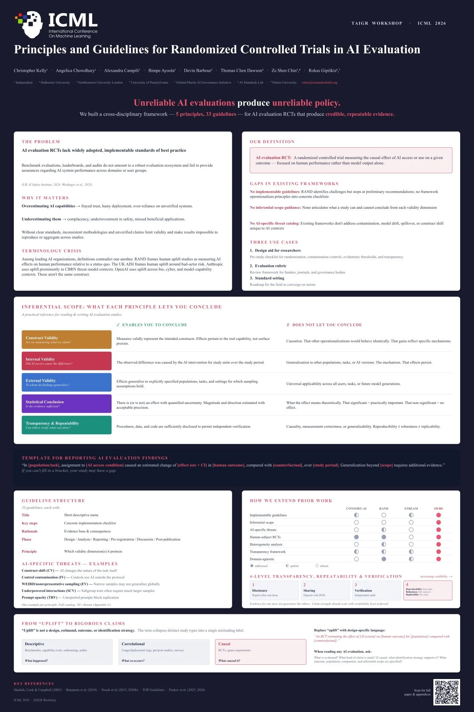
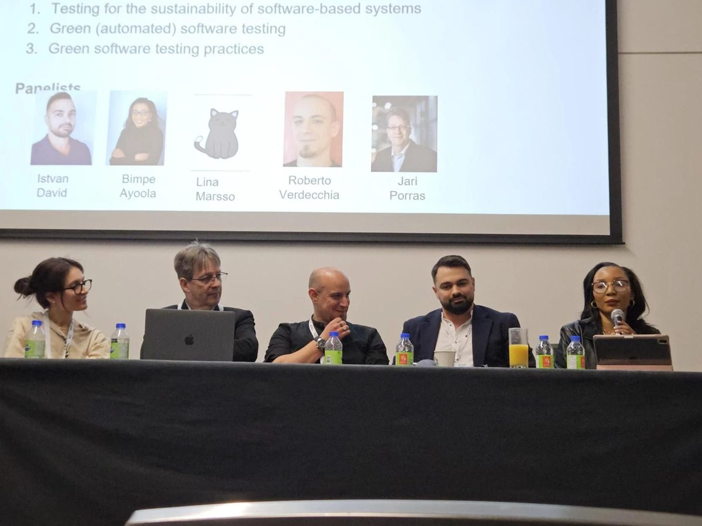
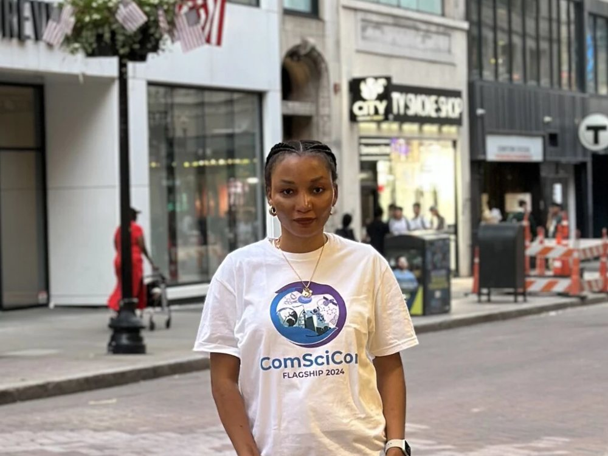
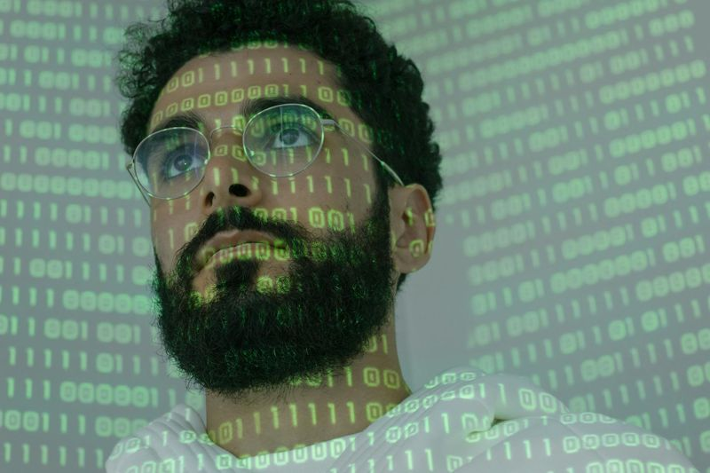

PhD defenseI defended my PhD!
My thesis tested evidence-based interventions that help software developers anticipate and reduce the social harms of what they build.

AI coding agents are changing how software is built, including the systems people rely on for health care, finance and public services. I study how to make that software safe to trust. My experiments test what helps developers catch safety, reliability and fairness risks before they reach the public.
Software decides who gets a loan, who sees a job ad and whose face a camera recognizes. Those outcomes start with everyday decisions developers make. I study those decisions and test ways to improve them.
I test simple tools, like user personas and stakeholder maps, that help developers notice who a feature might hurt.
AI coding agents now write a lot of software. I study how harm slips into their code, and how well developers catch it in review.
Good answers need good experiments. I work on methods for testing interventions and AI systems, including guidelines for randomized trials in AI evaluation.

PhD defenseMy thesis tested evidence-based interventions that help software developers anticipate and reduce the social harms of what they build.

ICML 2026Unreliable AI evaluations produce unreliable policy. With an international team, we built a framework of 5 principles and 33 guidelines for AI evaluation trials that produce credible, repeatable evidence. It was one of AI Standards Lab's ICML 2026 posters.
Read more here FSE 2026
FSE 2026
I led and presented a roadmap for how software engineering can define social sustainability, measure it and test what actually helps.
Read more here
Invited panelI was invited to speak on a panel about automated software testing for sustainability and resource efficiency, co-located with ICSE 2025. I also chaired a session at the conference.
See the post ICSE 2025
ICSE 2025
I presented evidence that personas lead developers to push harmful features down their priority list.
 Invited talk
Invited talk
As a Killam scholar, I presented my research on social sustainability in software development.
Read the Dal News story
ComSciCon 2024I was selected for the ComSciCon Flagship workshop and wrote about what it taught me on sharing research beyond the lab.
Read my reflectionNSERC Discovery Grant awarded to Professor Paul Ralph (PI). I helped develop the proposal and research design.
Program committee for the ICSE 2027 Software Engineering in Society track.
SPAR AI Safety Research Fellow, working with an international team on AI evaluation methods.
Digital Discovery Camp. Digital Nova Scotia invited me to lead a Python and chatbot workshop for young people in Halifax. See the feature
Three-Minute Thesis. I competed at Dalhousie with a talk on the social costs of our digital world.
OpenThink 2024 cohort. I was one of 16 Dalhousie PhD students selected to share research with communities beyond the university. Read the announcement
Led a four-year research program on social sustainability in software engineering, from study design and ethics approval to statistical analysis and publication. Brought in industry partners so that professional engineers took part in the experiments.
Worked with an international team on how AI evaluation studies are designed and reported. Co-wrote guidelines for randomized controlled trials in AI evaluation.
Design evaluation tasks and grading criteria for AI coding agents working in real codebases. Judge their output for correctness, reliability, code quality and safety.
Designed surveys and interviews and analyzed data on the barriers Black students face in STEM education and careers in Nova Scotia.
Led software projects in fintech, health and education from requirements to deployment. Built backend services and APIs with Agile teams and mentored junior developers.
The Killam Predoctoral Award and the Nova Scotia Graduate Scholarship funded my doctoral research. I also received fellowships, scholarships and travel awards.
One of Canada's most prestigious doctoral awards. It recognizes academic and research excellence and is offered competitively across five Canadian universities.
Awarded for academic excellence at the doctoral level.
Selected through a competitive process for a three-month AI safety research program.
One of 16 doctoral students selected for training in policy and media writing on AI ethics, digital inequality and sustainability.
Recognizes academic excellence and contributions to women in computing.
Travel support to present at ICSE 2025 in Ottawa and ICSE 2026.
Selected for the national science communication workshop for graduate students.
Won the challenge, run by IBM and RBC in Halifax.
As a 2024 OpenThink Scholar at Dalhousie, I wrote a blog series on software, sustainability and the people technology can leave behind. Here are three to start with.

Start hereWhy equity, inclusion and well-being deserve as much attention in software as performance and energy use.
Read moreFive signs to check in your own product, from equitable access and user well-being to ethical data practices.
Read moreResearchers propose ideas and industry puts them to the test. Why social sustainability needs both sides at the table.
Read moreIf you work on responsible AI, human-centred software or AI evaluation, I would love to hear from you. I am open to collaborations, talks and new roles.